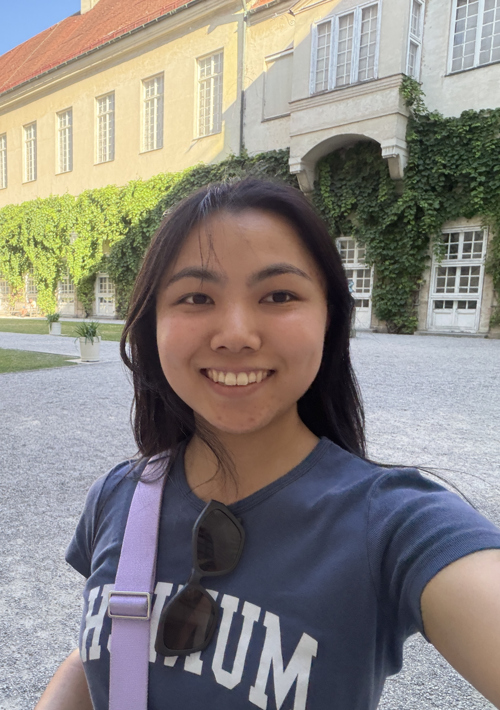

Hi, I am Rica — a designer, product thinker, and builder with a foundation in Information Science from Cornell. Currently a Platform Engineer at IBM, I translate user and business requirements into intuitive product experiences across AI, data platforms, and automation workflows. I move seamlessly between UX research, product design, and code to craft thoughtful, human-centered digital solutions.
During my Product & Engineering internship at DoSomething.org, I owned the sign-in / sign-up flow for the "A Renewed Lewk" clothing-swap program. Usability testing showed users dismissing the shortcut pop-up and losing their place, so I re-scoped it as a persistent step and clarified the Act section taxonomy.
A four-tab mobile concept for Cornell first-years who arrive without the map, the bus schedule, or a group of friends. Interviews with four freshmen surfaced fragmented event info and TCAT confusion; the app recommends events by interest, weekly schedule, and grade level, then routes the ride.
A four-person team built a responsive site for Cornell's Less Than Three A Cappella. Three rounds of card sorting shaped the IA (About · Members · Concert · Audition); I designed the carousel, member gallery, and mobile hamburger nav, then shipped the front-end with the team through GitHub.
Product, UX research, AI systems & engineering — the disciplines I move between when shipping.